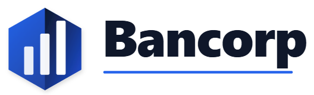

Negocio: que el 40% de los usuarios activos la use 8+ veces por mes y que el 20% de los de 18 a 25 contrate un 2º producto, a 18 meses del lanzamiento. Se mide con operaciones por usuario y productos por cliente.
TI: transferencias confirmadas en < 10 s el 99% de las veces y < 1% de cierres de la app por sesión, desde jun-2027. Monitoreo de [04] y reporte de fallas.
"Las transferencias a otros bancos salen rechazadas": [06] → funcional a [04] (core y red de transferencias) → jerárquico al CIO y Operaciones Bancarias si es masivo.
Puesto del escalado: especialista de Sistemas Core [04]. Competencias específicas: core bancario, transferencias interbancarias y clearing, monitoreo en tiempo real.
Entra: cuenta digital, transferencias, recargas, QR. No entra: préstamos, tarjeta de crédito, chat con personas. Termina: 3 meses de operación estable y acta de Banca Minorista.
La plataforma se satura en la campaña de lanzamiento y la app no responde. SEI: 2.1.1 Capacidad (hardware).
P 3: campaña masiva, pico de altas el primer día, pruebas de carga que no reflejan el uso real.
I 4: sin pérdida de plata, pero reseñas malas y jóvenes que desinstalan; se resiente la Innovación. → S 12
Mitigar: pruebas de carga al triple del pico y lanzamiento por región (baja P) + escalado automático y cola de espera (baja I). → P1 × I3 = 3
Disparador: respuesta de más de 5 s o más del 2% de errores durante 5 min.
Continuidad: Home Banking y sucursales. Recuperación: capacidad redimensionada y escalado probado.
Startup: "Sumá", beneficios y cashback para billeteras bancarias.
Segmento: bancos con billetera para jóvenes de menos de 2 años que necesitan subir el uso diario (6 a 8 en el país).
Propuesta de valor: que el usuario abra la billetera todos los días por descuentos cercanos, sin que el banco negocie con cada comercio.
Get: integración gratis los primeros 2 meses.
Keep: reporte mensual de operaciones generadas por los beneficios.
Grow: sumar beneficios para la tarjeta de crédito.
Push y SMS (SaaS) · pruebas de carga (licencia) · nube con escalado automático (por uso) · auditoría de seguridad (tercerizada). Criterios: escalabilidad en picos, tiempo de respuesta, normativa BCRA, soporte 24×7, TCO.
Negocio: subir del 30% al 45% los productos contratados por canales digitales y bajar del 8% al 5% anual las bajas por mala experiencia digital, antes de dic-2028. Contrataciones por canal y bajas con motivo.
TI: 100% de las operaciones sobre la capa común y una funcionalidad nueva en los dos canales en 1 semana en vez de 4, antes de dic-2027.
"El cliente ve un saldo distinto en la web y en la app": [06] → funcional a [03] (base de datos) o [04] si viene del core → jerárquico al CIO si es masivo.
Puesto: DBA del Core y Data Warehouse [03]. Competencias: bases de datos del core, replicación y consistencia de datos, consultas de auditoría.
Entra: transferencias, pagos y plazos fijos en la capa común, pantallas equivalentes, token unificado. No entra: banca empresas, chatbot, Open Banking. Termina: se apaga la lógica vieja de cada canal.
Al pasar una operación de la web al celular, un tercero se queda con la sesión y confirma una transferencia. SEI: 1.2 Fraude, por una debilidad de 2.2 Parámetros de seguridad.
P 2: ataque difícil y hay token, pero el traspaso es nuevo y atractivo.
I 5: plata del cliente, BCRA, medios, Confianza. → S 10
Mitigar: revalidar con el token y vencimiento a los 10 min (baja P) + tope de monto y alerta del SOC (baja I). → P1 × I3 = 3
Disparador: el SOC ve traspasos desde celulares no registrados, o un cliente denuncia una transferencia.
Continuidad: canales por separado. Recuperación: traspaso corregido y pentest.
Startup: "Pantalla Única", componentes de interfaz que sirven para web y app.
Segmento: bancos medianos con equipos chicos que mantienen web y app por separado.
Propuesta de valor: cada pantalla igual en los dos canales con la mitad del trabajo y accesible desde el día uno.
Get: migración gratis de 5 pantallas.
Keep: actualizaciones de accesibilidad y de normativa incluidas.
Grow: componentes para cajeros y tótems de sucursal.
Replicación de datos (licencia) · consultoría de arquitectura (tercerizada) · ambientes de prueba en la nube (por uso) · pentest del traspaso. Criterios: compatibilidad con el core, consistencia de datos, seguridad, experiencia en bancos, TCO.
Negocio: bajar de 3 semanas a 1 la capacitación de un cajero nuevo y un 30% las observaciones de Auditoría por operaciones fuera de norma, durante 2028. Capital Humano e informes de Auditoría.
TI: 90% de las consultas resueltas sin derivar y cada circular nueva cargada en < 48 h, antes de dic-2027. Registro de consultas.
"El copiloto no responde en las sucursales de la Región Patagónica": [06] → funcional a [01] (enlaces de sucursales) → jerárquico al CIO si hay que contratar más ancho de banda.
Puesto: especialista en Conectividad de Sucursales [01]. Competencias: redes WAN y VPN, enlaces con proveedores de telecomunicaciones, monitoreo de red.
Entra: piloto en 5 sucursales y despliegue por región, circulares, manuales y políticas, capacitación de 2 h. No entra: datos de clientes, uso por clientes. Termina: 45 sucursales y validación de Cumplimiento.
Los empleados no lo usan y siguen llamando a casa central. SEI: 1.3 Inacción → habilidad y conocimiento (falta capacitación y cambio de hábito).
P 3: personal con antigüedad, poco tiempo y desconfianza en la IA.
I 3: sin pérdida directa, pero la inversión no rinde y no se cumplen los objetivos. → S 9
Mitigar: referente por sucursal y acceso con un clic desde la caja (baja P) + medir el uso semanal y reforzar donde cae (baja I). → P2 × I2 = 4
Disparador: menos del 30% de una región lo usa durante 4 semanas.
Continuidad: se sigue atendiendo como hoy. Recuperación: versión mejorada y plan de adopción por región.
Startup: "Verifica IA", control de calidad de asistentes con IA.
Segmento: bancos y aseguradoras que lanzaron un asistente interno con IA en el último año.
Propuesta de valor: saber antes que el regulador cuándo tu IA responde mal, con un reporte para Cumplimiento.
Get: diagnóstico gratis sobre 200 preguntas.
Keep: reporte mensual de exactitud.
Grow: sumar los asistentes de atención a clientes.
IA en nube privada (SaaS) · indexación de documentos · capacitación por región (tercerizada) · mejores enlaces. Criterios: datos dentro del banco, exactitud en pruebas, poco ancho de banda, TCO.
Negocio: del 55% al 80% del personal con la capacitación obligatoria (lavado de dinero) en plazo y de 10 a 3 días la aprobación de una licencia, en 2028. Certificados y registros de Capital Humano.
TI: portal integrado con sueldos y el directorio: alta automática de un empleado en < 24 h y 100% migrado desde la intranet, antes de mar-2027.
"Los videos del e-learning no cargan en las sucursales": [06] → funcional a [01] (servidores y enlaces) → jerárquico al CIO si hay que contratar distribución de contenidos.
Puesto: administrador de servidores y almacenamiento [01]. Competencias: servidores locales y en la nube, almacenamiento, rendimiento de red.
Entra: contenidos de la intranet, e-learning con certificados, licencias, evaluaciones. No entra: reclutamiento, personal de proveedores, app propia. Termina: 100% migrado y acta de Capital Humano.
El proveedor de la plataforma deja de dar el servicio o sube mucho el precio. SEI: 3.3 Procesos de soporte → proveedores / 4.3 Cuestiones del negocio (falla del suministro).
P 2: proveedor estable y con contrato, pero hay pocos en el mercado.
I 4: sin recibos firmados (obligación legal), trámites frenados, Integridad. → S 8
Mitigar: evaluar su solvencia antes de contratar (baja P) + SLA, cláusula de salida con exportación de datos y 2º proveedor evaluado (baja I). → P1 × I3 = 3
Disparador: incumple el SLA 2 meses seguidos o cambia las condiciones.
Continuidad: recibos y licencias por mail. Recuperación: nuevo proveedor con un contrato mejor.
Startup: "Norma Aula", cursos cortos de normativa.
Segmento: bancos y financieras de 300 a 3.000 empleados obligados a capacitar en prevención de lavado.
Propuesta de valor: cumplir la capacitación obligatoria con cursos de 15 min y certificados listos para auditoría, sin armar contenidos.
Get: el curso de lavado de dinero gratis el primer año para 50 empleados.
Keep: se actualiza solo cuando cambia la norma.
Grow: cursos de atención al cliente y ciberseguridad.
E-learning (SaaS) · contenidos (tercerizados) · almacenamiento para videos (compra) · soporte de migración. Criterios: certificados válidos, poco ancho de banda, accesibilidad, TCO.